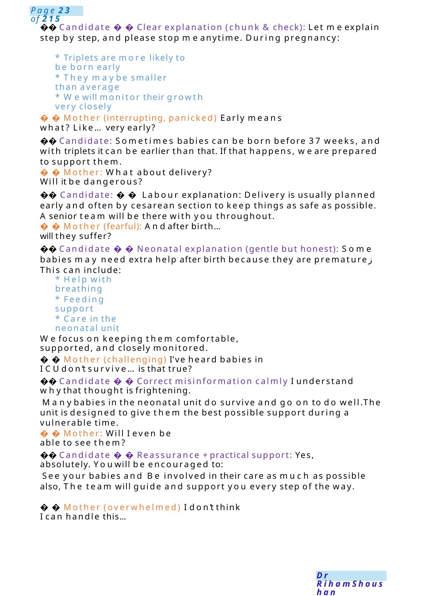
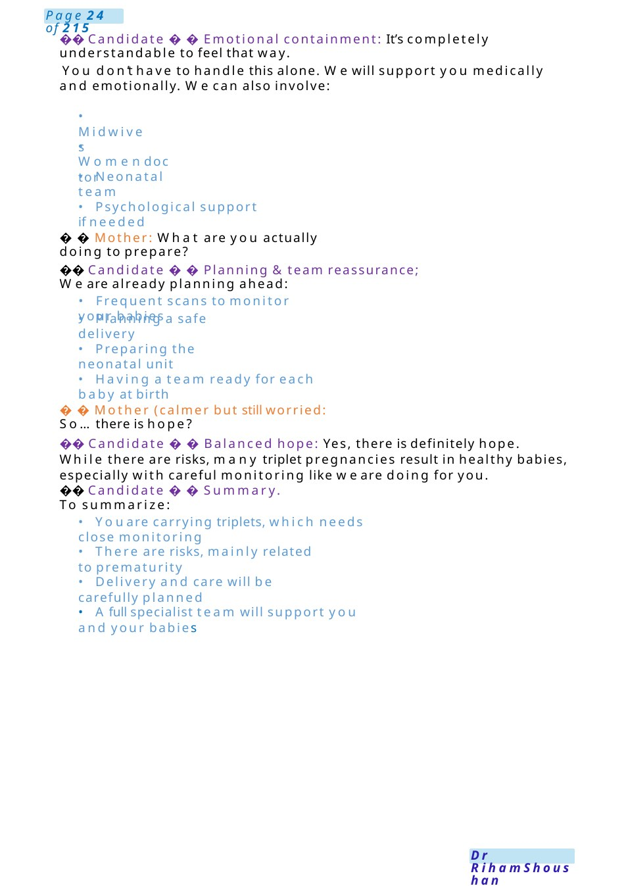
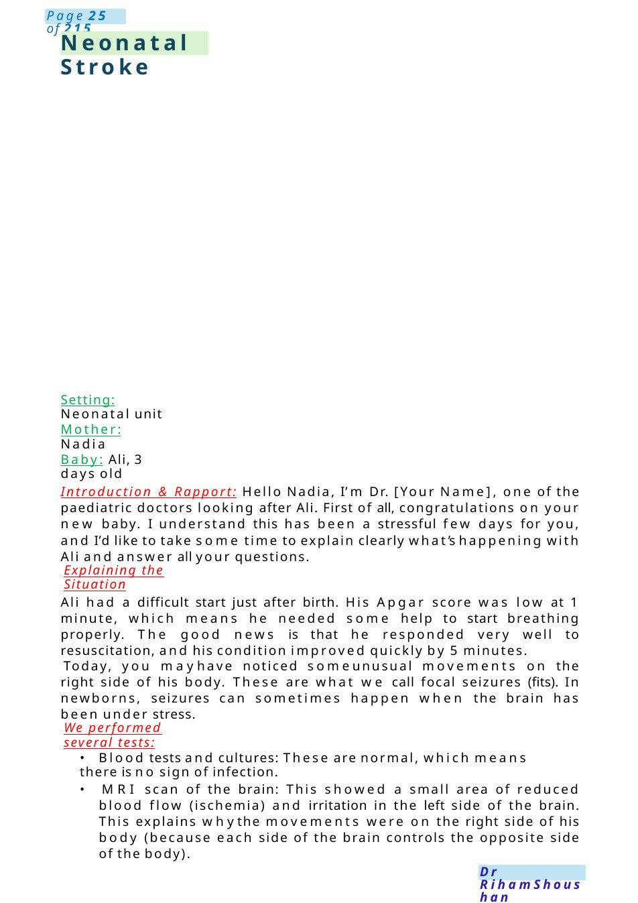

Triplet Pregnancy
Communication Station: Triplet pregnancy – anxious / distressed mother Hello Miss Alia, I’m Dr ...one of the pediatric doctors. I can see howworried and overwhelmed you feel—this is a lot to take in. let’s talk through everything together, and I’ll answer all your questions honestly.
Scenario Summary
Communication Station: Triplet pregnancy – anxious / distressed mother Hello Miss Alia, I’m Dr ...one of the pediatric doctors. I can see howworried and overwhelmed you feel—this is a lot to take in. let’s talk through everything together, and I’ll answer all your questions honestly.
Full Original Scenario

Triplet Pregnancy
Communication Station: Triplet pregnancy – anxious / distressed mother
⚕️ Candidate Opening +empathy
Hello Miss Alia, I’m Dr ...one of the pediatric doctors. I can see howworried and overwhelmed you feel—this is a lot to take in. let’s talk through everything together, and I’ll answer all your questions honestly.
Role Player: Miss Alia (Opening – distressed) Doctor...they told meI’mcarrying triplets...
I’m really scared... are my babies going to die? (Crying, visibly anxious) Please just tell me the truth...are they going to survive?
⚕️ Candidate Acknowledge + honest reassurance: I understand why you’re asking that. The honest answer is that manytriplet babies do survive and do well, especially with modern care. There are somerisks, but we are very experienced in managing themand will do everything possible to give your babies the best outcome.
Mother (crying more): I feel like this is myfault... I shouldn’t have gotten pregnant...
⚕️ Candidate Emotional support (key MRCPCHskill) I’m really sorry you’re feeling this way.
Please know that this is not your fault at all. Triplet pregnancies happen for reasons outside your control. You’ve done the right thing by coming and getting care.
Mother: What exactly is going to happen to them?

⚕️ Candidate Clear explanation (chunk &check): Let meexplain step by step, and please stop meanytime. During pregnancy:
- Triplets are more likely to be born early
- They maybe smaller than average
- Wewill monitor their growth very closely
Mother (interrupting, panicked) Early means what? Like...very early?
⚕️ Candidate: Sometimes babies can be born before 37 weeks, and with triplets it can be earlier than that. If that happens, we are prepared to support them.
Mother: What about delivery? Will it be dangerous?
⚕️ Candidate: Labour explanation: Delivery is usually planned early and often by cesarean section to keep things as safe as possible. Asenior team will be there with you throughout.
Mother (fearful): Andafter birth...will they suffer?
⚕️ Candidate Neonatal explanation (gentle but honest): Some babies may need extra help after birth because they are premature This can include:
- Help with breathing
- Feeding support
- Care in the neonatal unit
Wefocus on keeping them comfortable, supported, and closely monitored.
Mother (challenging) I’ve heard babies in ICUdon’t survive... is that true?
⚕️ Candidate Correct misinformation calmly I understand whythat thought is frightening.
Manybabies in the neonatal unit do survive and go on to do well.The unit is designed to give them the best possible support during a vulnerable time.
Mother: Will I even be able to see them?
⚕️ Candidate Reassurance +practical support: Yes, absolutely. Youwill be encouraged to:
See your babies and Be involved in their care as much as possible also, The team will guide and support you every step of the way.
Mother (overwhelmed) I don’t think I can handle this...

⚕️ Candidate Emotional containment: It’s completely understandable to feel that way.
You don’t have to handle this alone. Wewill support you medically and emotionally. Wecan also involve:
- Midwives
- Womendoctor
- Neonatal team
- Psychological support if needed
Mother: What are you actually doing to prepare?
⚕️ Candidate Planning &team reassurance; We are already planning ahead:
- Frequent scans to monitor your babies
- Planning a safe delivery
- Preparing the neonatal unit
- Having a team ready for each baby at birth
Mother (calmer but still worried: So...there is hope?
⚕️ Candidate Balanced hope: Yes, there is definitely hope. While there are risks, many triplet pregnancies result in healthy babies, especially with careful monitoring like we are doing for you.
⚕️ Candidate Summary. To summarize:
- Youare carrying triplets, which needs close monitoring
- There are risks, mainly related to prematurity
- Delivery and care will be carefully planned
- Afull specialist team will support you and your babies

Neonatal Stroke
Setting: Neonatal unit
Mother: Nadia
Baby: Ali, 3 days old
Introduction & Rapport: Hello Nadia, I’m Dr. [Your Name], one of the paediatric doctors looking after Ali. First of all, congratulations on your new baby. I understand this has been a stressful few days for you, and I’d like to take some time to explain clearly what’s happening with Ali and answer all your questions.
Explaining the Situation
Ali had a difficult start just after birth. His Apgar score was low at 1 minute, which means he needed some help to start breathing properly. The good news is that he responded very well to resuscitation, and his condition improved quickly by 5 minutes.
Today, you mayhave noticed someunusual movements on the right side of his body. These are what we call focal seizures (fits). In newborns, seizures can sometimes happen when the brain has been under stress.
We performed several tests:
- Blood tests and cultures: These are normal, which means there is no sign of infection.
- MRI scan of the brain: This showed a small area of reduced blood flow (ischemia) and irritation in the left side of the brain. This explains whythe movements were on the right side of his body (because each side of the brain controls the opposite side of the body).